plot(cars)
(Test typing random bolded italicized words and sentences to see if it is replicated onto the rendered results.) Quarto enables you to weave together content and executable code into a finished document. To learn more about Quarto see https://quarto.org.
plot(cars)
This is a base R plot of the in-built cars dataset that has only two columns:
head(cars) speed dist
1 4 2
2 4 10
3 7 4
4 7 22
5 8 16
6 9 10Q. How would we plot this dataset with ggplot2?
All ggplot figures have at least 3 layers:
Before I use any new package, I need to download and install it with the install.packages() command.
I never use install.packages() within my quarto document otherwise I will install the package over and over and over again - which is silly!
Once a package is installed, I can load it up with the library() function.
# install.packages("tidyverse")
# Before you use it every time, you need library(ggplot2) to call the installed packages to be activated for the current session
library(ggplot2)
ggplot(cars) +
aes(x=speed, y=dist) +
geom_point()
Key-point: For simple plots (like the one above) ggplot is more verbose (we need to do more typing; “fancier”), but as plots get more complicated ggplot starts to be more clear and simple than base R plot().
# "p <- ggplot()" used to save the plot.
ggplot(cars) +
aes(speed,dist) +
geom_point() +
geom_smooth(se=F, na.rm=T) +
labs(title="Stopping distance of Old Cars",
subtitle = "From the in-built cars dataset",
ytitle = "distance",
xtitle = "Speedy Speed Speed") +
theme_minimal()`geom_smooth()` using method = 'loess' and formula = 'y ~ x'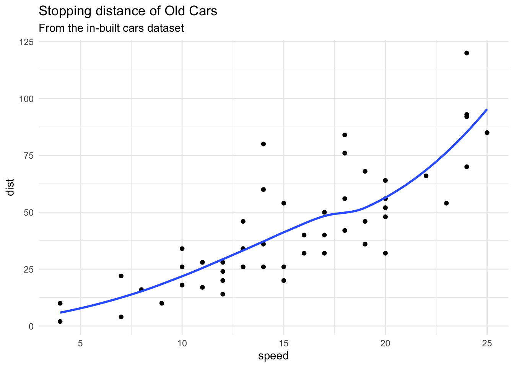
url <- "https://bioboot.github.io/bimm143_S20/class-material/up_down_expression.txt"
genes <- read.delim(url)
nrow(genes)[1] 5196colnames(genes)[1] "Gene" "Condition1" "Condition2" "State" ncol(genes)[1] 4table(genes$State)
down unchanging up
72 4997 127 # or round( table(genes$State)/nrow(genes), 2)The key functions here where:
nrow() and ncol() table() is very useful for getting counts finally round()
url <- "https://bioboot.github.io/bimm143_S20/class-material/up_down_expression.txt"
genes <- read.delim(url)
p <- ggplot(genes) +
aes(x=Condition1, y=Condition2) +
geom_point()
p + scale_colour_manual(values=c("blue","gray","red") ) 
url <- "https://bioboot.github.io/bimm143_S20/class-material/up_down_expression.txt"
genes <- read.delim(url)
p <- ggplot(genes) +
aes(x=Condition1, y=Condition2, col=State) +
geom_point()
p + scale_colour_manual( values=c("blue","gray","red") ) +
# Question: Nice, now add some plot annotations to the p object with the labs() function so your plot looks like the following:
labs(title="Gene Expression Changes Upon Drug Treatment",
x="Control (no drug)",
y = "Drug Treatment")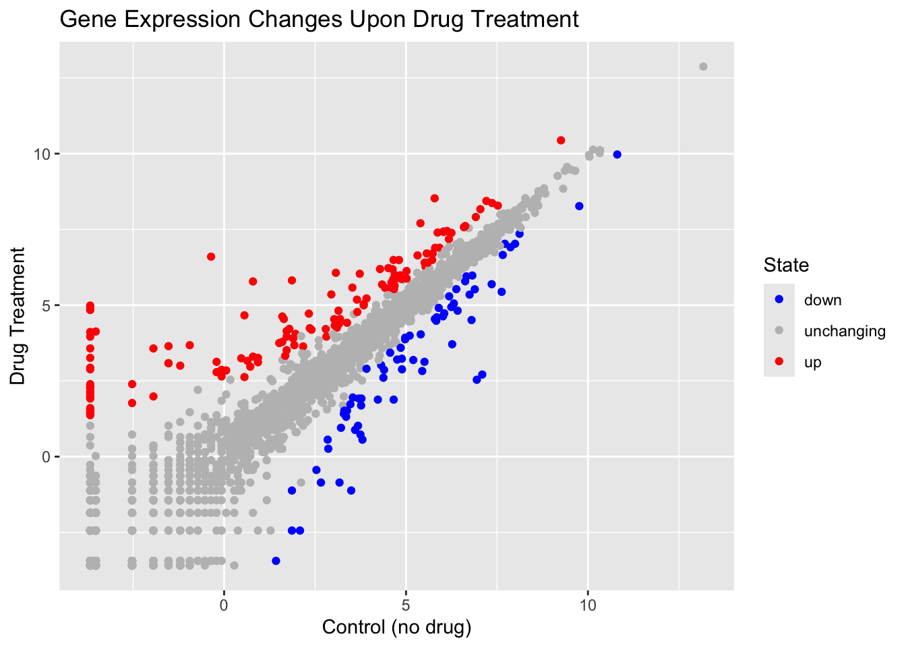
# install.packages("gapminder")
library(gapminder)
# Or Read File location online
# url <- "https://raw.githubusercontent.com/jennybc/gapminder/master/inst/extdata/gapminder.tsv"
#
# gapminder <- read.delim(url)
# install.packages("dplyr")
library(dplyr)
Attaching package: 'dplyr'The following objects are masked from 'package:stats':
filter, lagThe following objects are masked from 'package:base':
intersect, setdiff, setequal, uniongapminder_2007 <- gapminder %>% filter(year==2007)
ggplot(gapminder_2007) +
aes(x=gdpPercap, y=lifeExp) +
geom_point(alpha=0.5)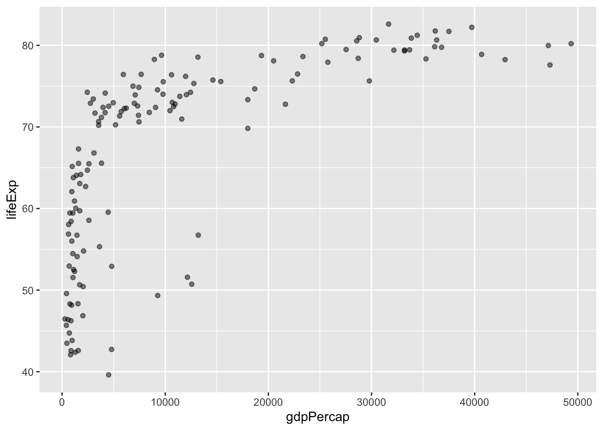
# Shows how many unique years there are in the dataset
length( unique(gapminder$year))[1] 12# filter to countries
filter(gapminder, country =="United States")# A tibble: 12 × 6
country continent year lifeExp pop gdpPercap
<fct> <fct> <int> <dbl> <int> <dbl>
1 United States Americas 1952 68.4 157553000 13990.
2 United States Americas 1957 69.5 171984000 14847.
3 United States Americas 1962 70.2 186538000 16173.
4 United States Americas 1967 70.8 198712000 19530.
5 United States Americas 1972 71.3 209896000 21806.
6 United States Americas 1977 73.4 220239000 24073.
7 United States Americas 1982 74.6 232187835 25010.
8 United States Americas 1987 75.0 242803533 29884.
9 United States Americas 1992 76.1 256894189 32004.
10 United States Americas 1997 76.8 272911760 35767.
11 United States Americas 2002 77.3 287675526 39097.
12 United States Americas 2007 78.2 301139947 42952.# What countries in data set had pop smaller than Ireland in 2007?
# First limit/subset the dataset to the year 2007
# Then find the pop value for Ireland
# Then extract all rows with pop less than Ireland
# Claude AI RESPONSE
# First, let's find Ireland's population in 2007
ireland_pop_2007 <- gapminder %>%
filter(country == "Ireland", year == 2007) %>%
pull(pop)
# Now, let's find countries with smaller populations in 2007
smaller_countries <- gapminder %>%
filter(year == 2007, pop < ireland_pop_2007) %>%
select(country, pop) %>%
arrange(desc(pop))
# View the results
print(smaller_countries)# A tibble: 31 × 2
country pop
<fct> <int>
1 West Bank and Gaza 4018332
2 Puerto Rico 3942491
3 Lebanon 3921278
4 Congo, Rep. 3800610
5 Albania 3600523
6 Uruguay 3447496
7 Mauritania 3270065
8 Panama 3242173
9 Oman 3204897
10 Liberia 3193942
# ℹ 21 more rowslibrary(gapminder)
library(dplyr)
gapminder_2007 <- gapminder %>% filter(year==2007)
ggplot(gapminder_2007) +
aes(x=gdpPercap, y=lifeExp, color=continent, size=pop) +
geom_point(alpha=0.5)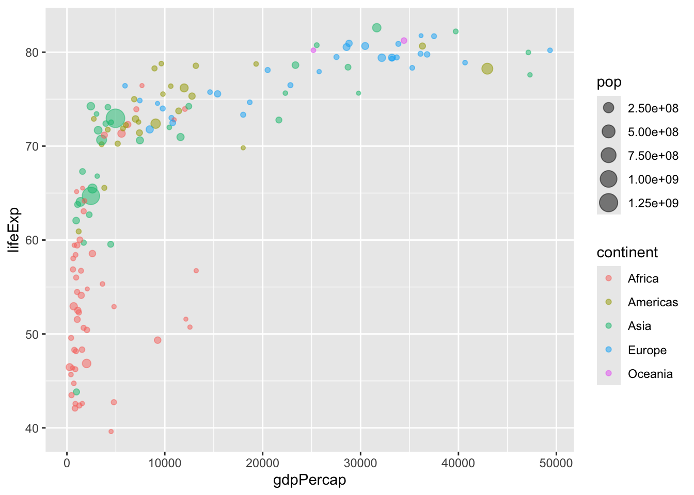
library(gapminder)
library(dplyr)
gapminder_2007 <- gapminder %>% filter(year==2007)
ggplot(gapminder_2007) +
aes(x = gdpPercap, y = lifeExp, color = pop) +
geom_point(alpha=0.8)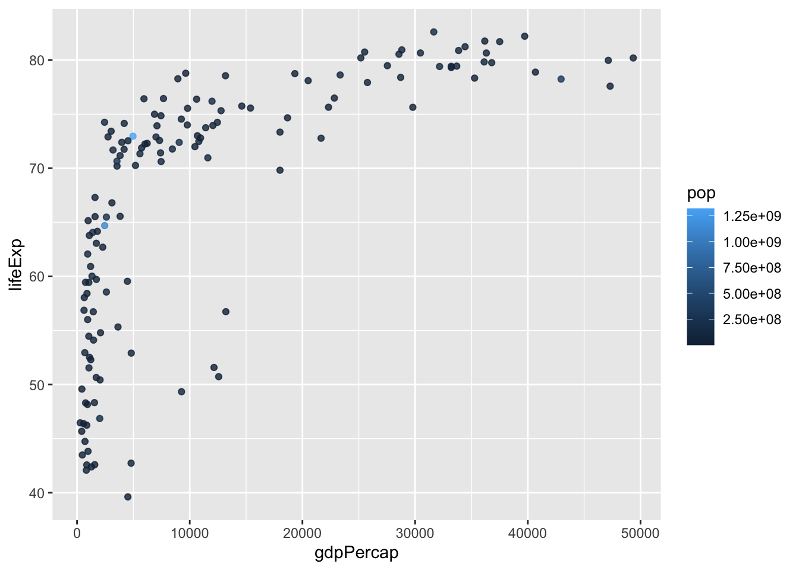
library(gapminder)
library(dplyr)
gapminder_2007 <- gapminder %>% filter(year==2007)
ggplot(gapminder_2007) +
# use scale_size_area() to reflect the actual population differences by the point size
geom_point(aes(x = gdpPercap, y = lifeExp,
size = pop), alpha=0.5) +
scale_size_area(max_size = 10)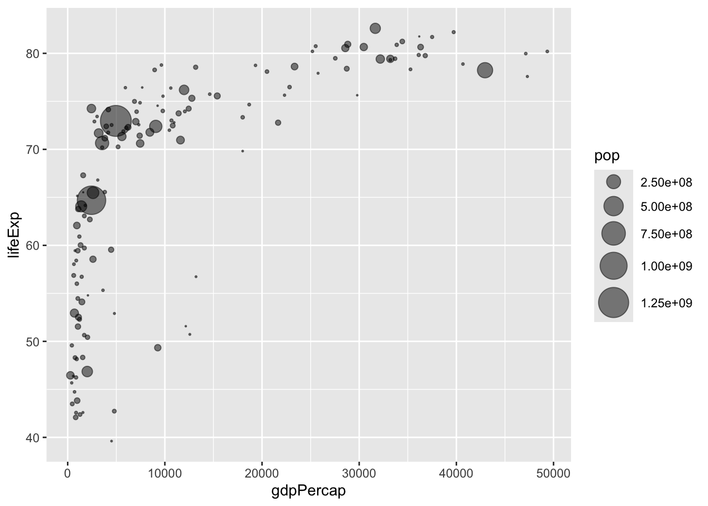
# Q. Can you adapt the code you have learned thus far to reproduce our gapminder scatter plot for the year 1957? What do you notice about this plot is it easy to compare with the one for 2007?
library(gapminder)
library(dplyr)
gapminder_1957 <- gapminder %>% filter(year==1957)
ggplot(gapminder_1957) +
geom_point(aes(x=gdpPercap, y=lifeExp, col=continent, size=pop), alpha=0.7) +
scale_size_area(max_size = 15)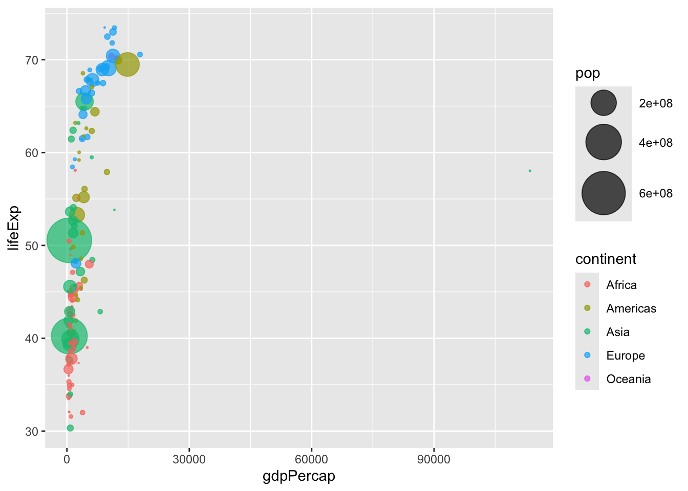
# Q. Do the same steps above but include 1957 and 2007 in your input dataset for ggplot(). You should now include the layer facet_wrap(~year) to produce the following plot:
library(gapminder)
library(dplyr)
gapminder_1957 <- gapminder %>% filter(year==1957 | year==2007)
p <- ggplot(gapminder_1957) +
geom_point(aes(x=gdpPercap, y=lifeExp, col=continent, size=pop), alpha=0.7) +
scale_size_area(max_size = 10)
p +
facet_wrap(~year)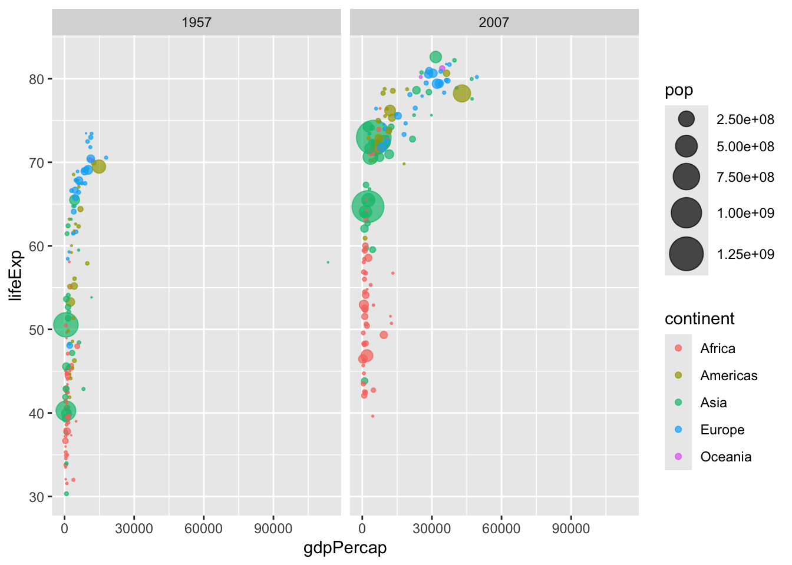
##OPTIONAL SECTIONS
# Bar Chart Introduction
# Q Create a bar chart showing the life expectancy of the five biggest countries by population in 2007.
library(gapminder)
library(dplyr)
gapminder_top5 <- gapminder %>%
filter(year==2007) %>%
arrange(desc(pop)) %>%
top_n(5, pop)
gapminder_top5# A tibble: 5 × 6
country continent year lifeExp pop gdpPercap
<fct> <fct> <int> <dbl> <int> <dbl>
1 China Asia 2007 73.0 1318683096 4959.
2 India Asia 2007 64.7 1110396331 2452.
3 United States Americas 2007 78.2 301139947 42952.
4 Indonesia Asia 2007 70.6 223547000 3541.
5 Brazil Americas 2007 72.4 190010647 9066.ggplot(gapminder_top5) +
geom_col(aes(x=country, y=lifeExp))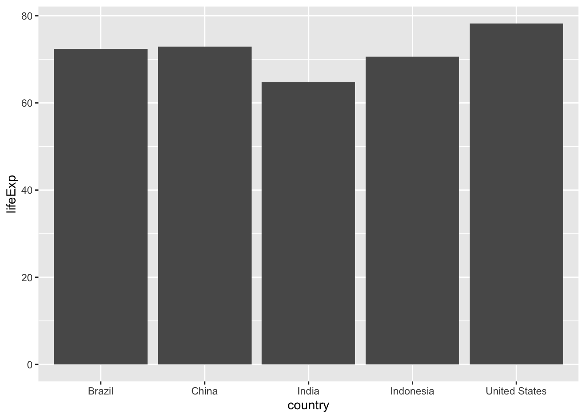
# Q. Plot population size by country. Create a bar chart showing the population (in millions) of the five biggest countries by population in 2007.
ggplot(gapminder_top5) +
aes(x=reorder(country, -pop), y=pop, fill=country) +
geom_col(col="gray30") +
guides(fill="none")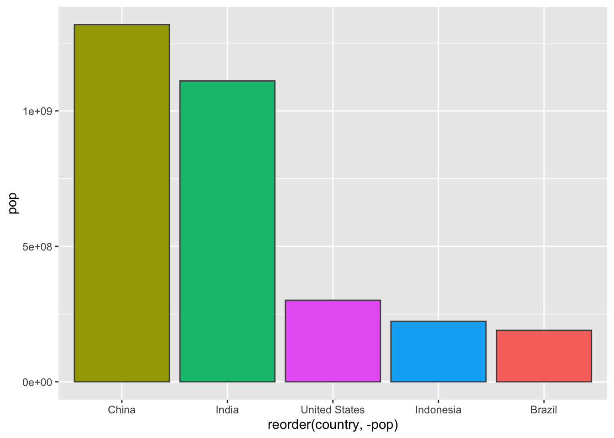
# Flipped Bar Charts
head(USArrests) Murder Assault UrbanPop Rape
Alabama 13.2 236 58 21.2
Alaska 10.0 263 48 44.5
Arizona 8.1 294 80 31.0
Arkansas 8.8 190 50 19.5
California 9.0 276 91 40.6
Colorado 7.9 204 78 38.7# using geom_point() and geom_segment() cleans up the aesthetics and makes the chart easier on our eyes.
USArrests$State <- rownames(USArrests)
ggplot(USArrests) +
aes(x=reorder(State,Murder), y=Murder) +
geom_point() +
geom_segment(aes(x=State,
xend=State,
y=0,
yend=Murder), color="blue") +
coord_flip()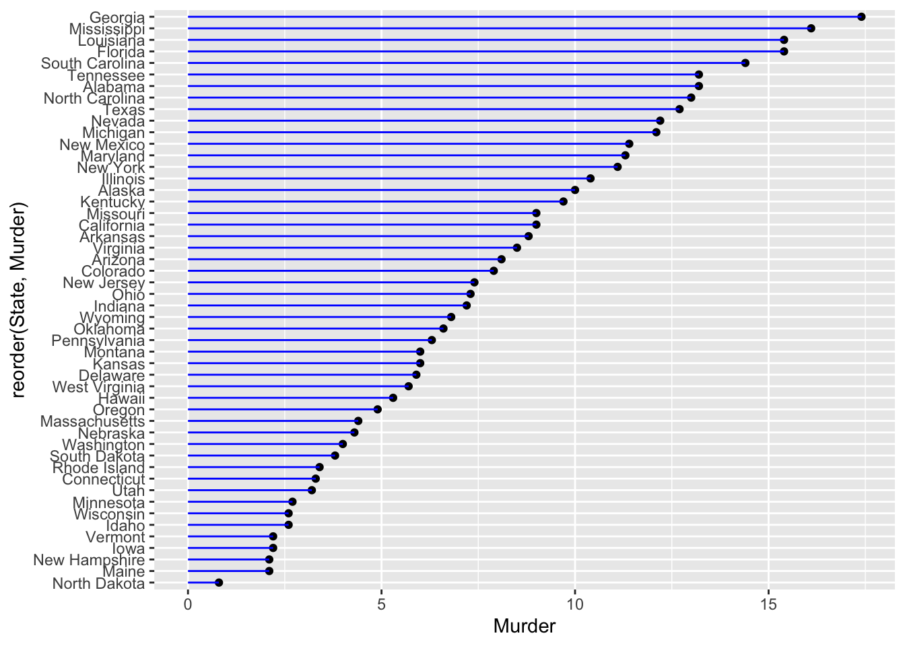
When you click the Render button a document will be generated that includes both content and the output of embedded code. You can embed code like this:
1 + 1[1] 2You can add options to executable code like this
[1] 4The echo: false option disables the printing of code (only output is displayed).